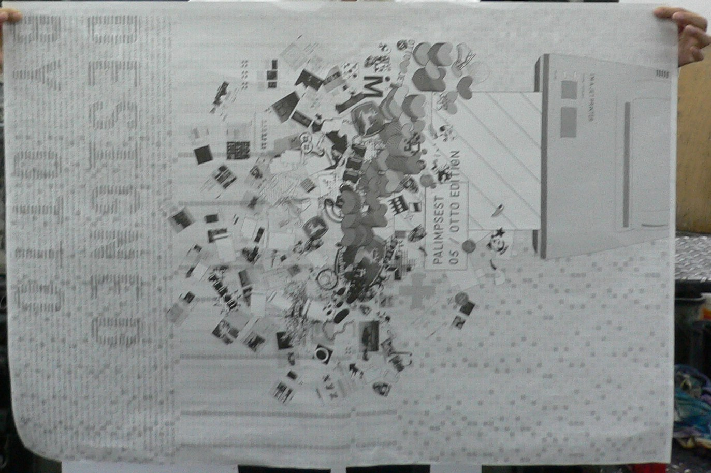
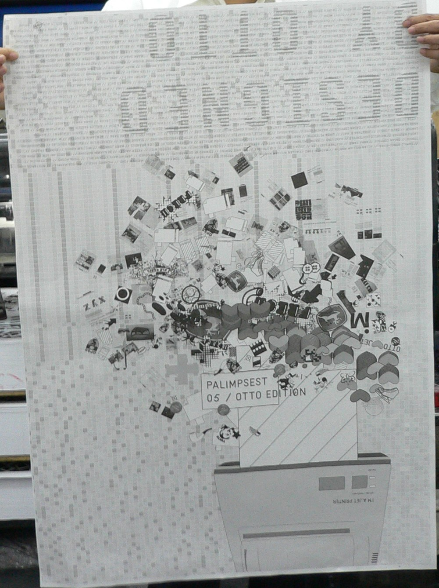

Otto
An early automated design system that laid out the 2005 issue of Palimpsest, the Yale School of Art's literary magazine: automation with craft built in.

The problem
Could a designer hand layout decisions to a system and still keep a curatorial hold on the work? Palimpsest, the School of Art's literary magazine, was the test: a whole issue designed largely by proxy.
The approach
Built Otto (short for automatic) with a small group of graduate students: editors, programmers and graphic designers. Every submission was tagged with a three-digit number, and those numbers formed the strict file structure Otto needed for its analysis.
Contributors answered a short questionnaire. Eleven multiple-choice questions, each paired with an icon, shaped the page; a twelfth chose one of four templates: clean and pristine, full and colourful, illustrated, or lots of patterns.
Otto, written in Processing, averaged the colour in every image, converted it to CMYK and used the ink saturation to place each work in the book. Text stayed in the editors' order, while the art was hand-shuffled at the bindery, so every copy sequences the same material differently.
How Otto worked
A pipeline from editorial judgement to layout, with the designer setting the rules and the system doing the placing.
- 01 · TagNumber every piece
A three-digit ID from the order the editors solicited it, forming the file structure Otto reads.
- 02 · AskTwelve questions
Eleven icon-paired answers shape the page; the twelfth picks one of four templates.
- 03 · Read colourRGB to CMYK
Otto averages each image’s colour and uses ink saturation to decide where it sits in the book.
- 04 · BindShuffle by hand
Text keeps the editors’ order; art signatures are shuffled at the bindery, so no two copies match.
Otto’s pages
Spreads generated by the system, shown in sequence the way a reader shuffles through a copy.


Each spread carries Otto’s working marks: the submission number and date, the contributor’s icon answers, and colour-coded fields read from the work itself.
Results

Leadership
Designed the system and the publication with Otto, credited as "Designers: Elisabeth Prescott and Otto". It was precursor work for the AI and systems design that runs through every role since: automation that keeps craft and authorship intact.